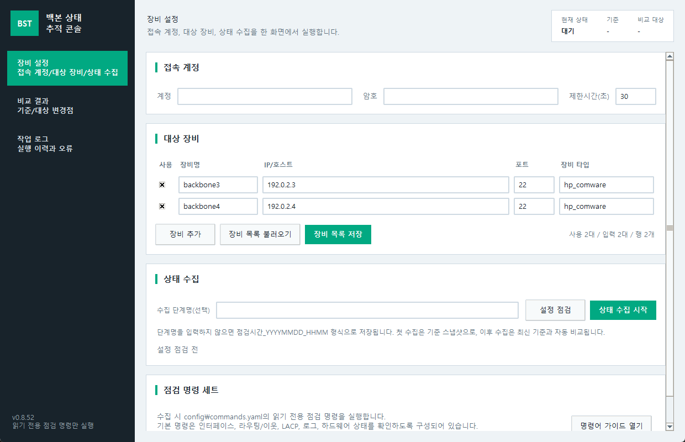
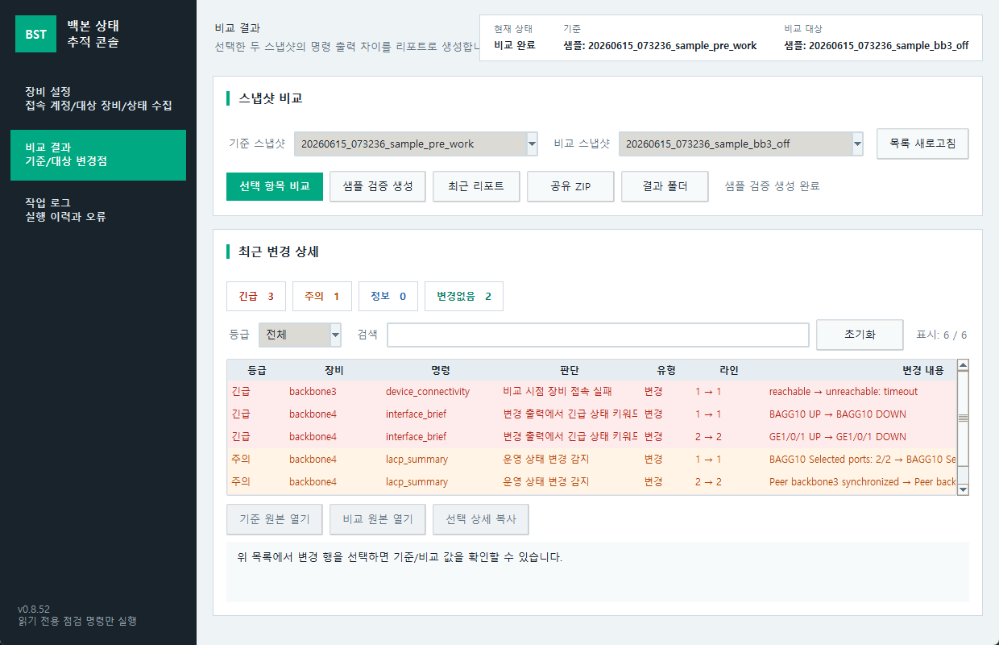
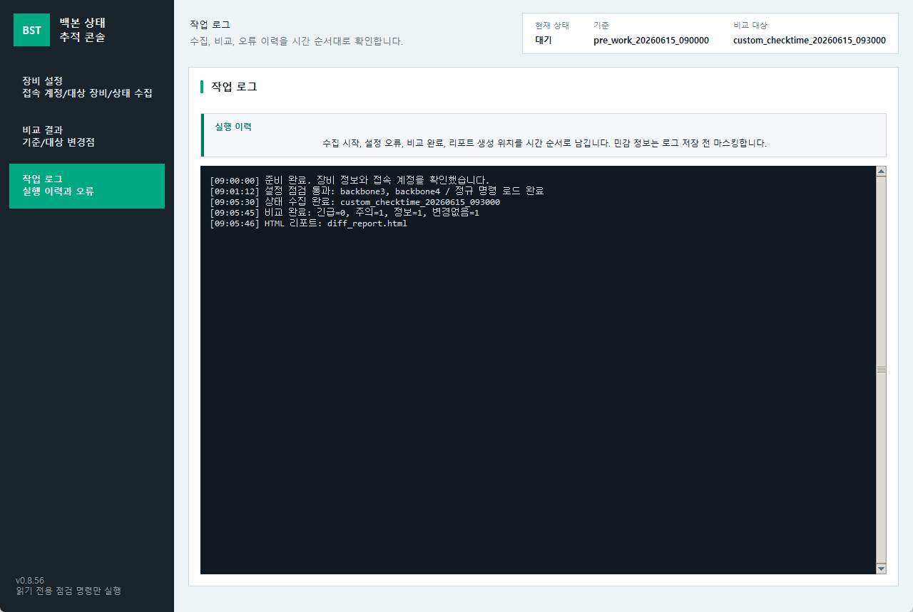

문서 버전: v0.8.21
작성일: 2026-06-12
대상: 백본 3/4호기 상태 점검 및 휴전 작업 검증 담당자
장비 설정에서 접속 계정, 백본3/4 대상 장비, 상태 수집을 한 화면에서 처리합니다.점검시간_YYYYMMDD_HHMM 이름으로 저장됩니다.작업 로그 화면으로 자동 이동합니다.
설정 점검은 장비 목록과 명령 세트 설정을 로컬에서 먼저 검증합니다.상태 수집 시작은 읽기 전용 점검 명령만 실행합니다.
긴급, 주의, 정보, 변경없음 카드는 필터 버튼입니다.device_connectivity 한 줄로 표시됩니다.
raw/*.txt에 별도 저장됩니다.| 등급 | 기준 |
|---|---|
| 긴급 | 장비 접속 실패, 명령 실패, 인터페이스 Down, LACP selected 수 감소, OSPF Full 이탈, major alarm, fault, abnormal, offline, missing |
| 주의 | minor alarm, warning, error, 라우팅/STP/로그/리소스 변화처럼 영향 확인이 필요한 변화 |
| 정보 | 접속 복구 또는 긴급/주의 키워드가 없는 일반 출력 변화 |
| 변경없음 | 의미 있는 변경이 감지되지 않은 항목 |
상세 보기를 누르면 현재 다른 등급 필터가 켜져 있어도 해당 상세가 보이도록 필터가 자동으로 맞춰집니다.변경없음 블록은 기본으로 접혀 있습니다.샘플 검증 스냅샷은 실제 작업 전 기준으로 사용되지 않습니다. 샘플만 있는 상태에서 첫 실제 수집을 시작하면 작업 전 기준으로 저장됩니다. 샘플 스냅샷이 상단 기준 또는 비교 대상에 표시될 때는 샘플: 접두어가 붙습니다.
Get-FileHash -Algorithm SHA256 .\backbone_state_tracker_v0.8.21_YYYYMMDD_windows_exe.zip
python .\tools\verify_release_package.py .\dist\backbone_state_tracker_v0.8.21_YYYYMMDD_windows_exe.zip --require-manifest
powershell -ExecutionPolicy Bypass -File .\backbone_state_tracker_v0.8.21_YYYYMMDD_verify_release_package.ps1 -Package .\backbone_state_tracker_v0.8.21_YYYYMMDD_windows_exe.zip -RequireManifest